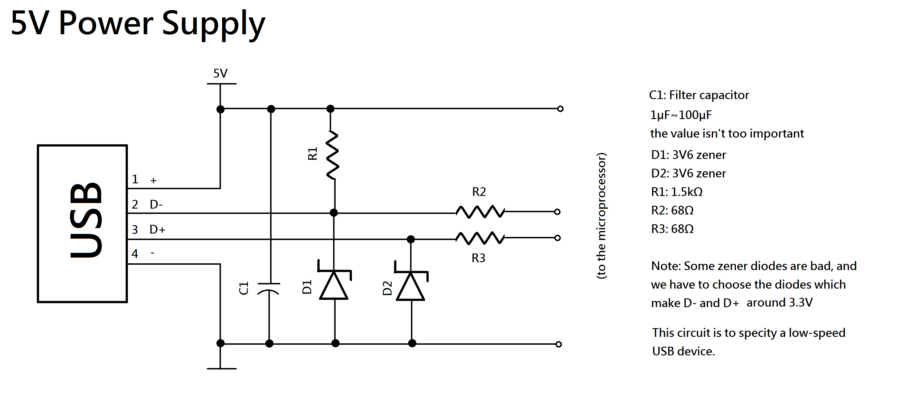
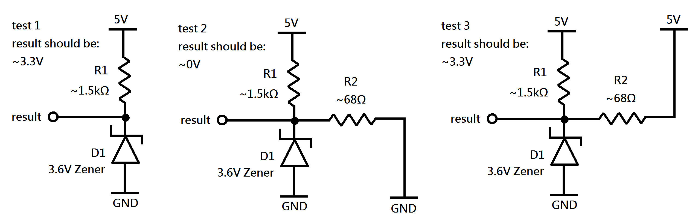
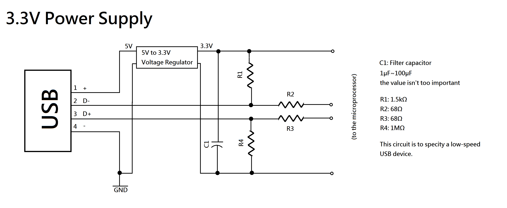
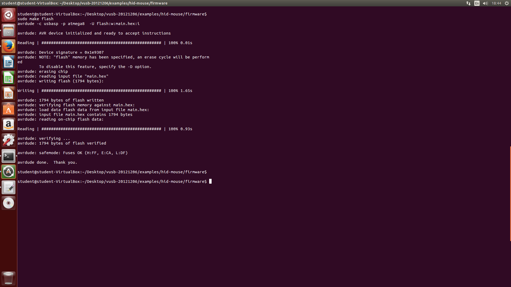

AVR+USB: V-usb, USBasp燒錄器製作, libusb
電路&注意事項
請參考Hardware Considerations (vusb.wikidot.com)， 這裡寫得很詳細。注意事項
以下不論是下面哪一個應用，因為都使用USB，必須使用正確的邏輯準位。因此需要轉換電路。在同時使用線上燒錄器(ISP Programmer)及系統(微處理器)的時候，必須注意不可將兩個不同的電源並聯(短路)，尤其在使用USB應用時，通常會有兩種電源供應(5V和3.3V)，如果系統運作和線上燒錄器使用不同的電壓，在燒錄前必定要關閉系統電源，在系統運作時必定要拔除ISP燒錄器，否則會造成電子元件損壞(如果電壓一樣但不同電源還是建議拔起，畢竟有些微差異，如果只有一個電壓源，可不拔起，但拔起是最保險的)。
進行USB應用時，通常會用3.3V或5V對微處理器供電(當然，對AVR微處理器別的電壓也可，例如接單顆鋰電池3.7V，接碳鋅電池6V等等，不過由於是USB通訊，5V或3.3V會比較方便)。
V-USB可以使用12Mhz時脈為 12 MHz, 12.8 MHz, 15 MHz, 16 MHz, 16.5 MHz, 18 MHz and 20 MHz請參考Hardware Considerations (vusb.wikidot.com)。
USB線請盡量短，以及降低雜訊，常常是線的問題，請使用雜訊低的線材。
電路
請注意，D-接了上拉電阻(pull up電阻，代表這是一個低速(Low Speed) USB裝置(參usb in a nutshell)。由於這些範例使用的函式庫都是V-USB，它是usb 1.1，所以是低速裝置。其實用軟體模擬的USB裝置能到1.1已經不錯了，如果要USB 2.0的話要用別的晶片，可以考慮不用AVR，但用AVR也可。AVR有USB2.0的版本，那是用硬體去搞的USB裝置所以很快，就是atmega8U2/16U2/32U2。如果這個裝置有其它額外的電源，不只由USB埠供電，其實可以拋棄USB的+(5V)，-(GND)線，反正是D-、D+的差分輸入，只要D-，D+不要跟GND或5V電壓差太多就好了(不然會燒掉…)，所以或許可以拿GND來參考，就知道怎樣才不會燒掉…或許完全不要接，電氣隔離這樣，然後兩邊對接地以後的電壓注意一下…。
對AVR微處理器供電5V的電路
這個5V供電電路，因為準位轉換電路還蠻粗糙的，所以有些需要注意的地方。首先，68Ω的電阻不要拿掉(短路)，否則輸出高電位就會直接是5V；接著，然納二極體(Zener)的電流-電壓曲線(I-V Curve)每個都些微不同，這樣接不一定能保證電路工作在3.3V(雖然買3.6V然納二極體，電路卻是工作在3.3V，買3.3V的反而不行因為電壓太低)，在焊接之前，一定要先測試過(可在麵包板上)，建議的測試電路如圖。
還有，那個電容是電源濾波電容，理論上要計算正確的電容值(大電容不一定比較好)，濾掉干擾較大的頻率，不過其實電源供應還OK的話，電容值多少影響沒有很大…。(電解電容可，怕放久電容量會變小而已；陶瓷電容0.1μF(104，表示10*10^4 pF=0.1μF)速度比較快?常用於微處理器電源電路中)最後，阻值在測試及調整時不能改變太多，因為不只電壓重要，電流也重要，電阻太大就沒電流了。而且上拉電阻是來識別低速USB裝置的。
對AVR微處理器供電3.3V的電路
這個3.3V供電電路也不錯，要特別注意的是不要跟線上燒錄器電源同時接著短路了…。那個電容是濾波電容，也是電容值理論上要計算正確的但沒太重要。那為什麼我5V轉3.3V的電路沒畫出來呢，因為這裡有很多種實現方法。建議不要直接串聯兩個矽質二極體因為這種方法搞出來的電壓不穩而且最大電流被二極體限制住。最好呢，就是穩壓器，可以直接自己搞電路，或者不想那麼大面積就用IC。IC可以用改變周邊電路就改變輸出電壓的那種通用型電壓轉換IC(例如LM1117-ADJ)(不可用LM317因為輸出至少要比輸入小3V)，也可以用固定3.3V輸出的(例如LM7833，LM1117-3.3V)，也可以專用5V轉3.3V的(例如LM3940)輸出，或者，拋棄USB port的供電電源，反正是D-、D+的差分輸入，直接用其它的3.3V電源。呃…有些穩壓IC要裝散熱片==好麻煩，空間又很大，但為了安全還是要裝。(註：如果這些IC買不到或不想用那就找別顆吧，如果我講錯，請自己去找IC的datasheet)
V-usb
V-usb是啥
V-usb官網V-usb就是一套Atmel AVR微處理器的函式庫(firmware)，讓晶片用軟體模擬低速USB裝置，不需額外晶片輔助，支援USB1.1。
注意：它並非完全免費，需要做商業使用時，要買授權。Licensing the V-USB Driver
V-usb的安裝
載點 備份V-USB好像也沒什麼安裝方法，就下載下來解壓縮，裡面還有範例…不用額外安裝手續只要引入標頭檔即可。編譯時可參考範例給的Makefile
範例
那麼，就用一個範例來讓大家熟悉如何使用這個函式庫吧！也可以參考官網上的應用範例。ㄏㄏ不過我想要用範例程式來解說www。
我們只要知道如何用這個範例程式就好了，解壓縮之後，切換到
/vusb-20121206/examples/hid-mouse/firmware/的目錄下。因為它已經寫好Makefile 了，不用再打太長的指令。此時，要根據你的電路及裝置調整Makefile跟usbconfig.h (如果不想改的話…就反過來調整電路…)。以下不需更動main.c的內容。
開 啟Makefile(如果你是用WINDOWS系統，看不到換行，是因為WINDOWS換行有回車字元，所以是\r \n(0x0D, 0x0A)，linux則只有 \n(0X0A)。如果不介意換行看不出來，直接改makefile的內容其實也OK，不然就用notepad++開…)
在Makefile 裡第9行第10行，預設是
DEVICE = atmega168 和 F_CPU = 16000000，請依裝置調整，像我的電路就是atmega8 和 12000000。開啟usbconfig.h
在第25、29、33行，預設是
#define USB_CFG_IOPORTNAME D#define USB_CFG_DMINUS_BIT 4#define USB_CFG_DPLUS_BIT 2意思是 D- 要連到 Port D 的第4腳(PD4)，D+要連到 Port D 的第2腳(PD2)，對應到的實體腳位可上網搜尋那個晶片的引腳圖。如果你那個晶片引腳比較少，就更要注意，不然指定的IO腳位沒有引出就無法輸出了(例如atmega8沒有PB6)…在此附上atmega8的腳位圖。
所以你要依你的電路調整usbconfig.h的內容(剛剛的makefile也要)。
然後就可以開始編譯及燒錄啦。注意：如果資訊有改動 需要重新編譯
當然，可以直接用avr-gcc以及avrdude來做編譯及燒錄，不過有現成的Makefile幹麻不用呢？對了，這裡的Makefile預設是以usbasp做為燒錄器。(不信的話自已打開Makefile看看。)
編譯打
make hex燒錄打
make flash找不到usbasp就打
sudo make flash出現
make: Nothing to be done for `hex'.代表你已經編譯過最新版本，但有時候判斷最新版本的程式還是會出問題，請打make clean後重新編譯。!!!!!!!!千萬要注意，只能打
make flash才不會動到fuse，不然以後這個晶片就不能修改了!!!!!!!!!!如果你的晶片一直無法寫入，那可能是FUSE已被寫入，請換一顆全新的晶片。
燒錄完成 燒錄完成之後，就可以拔掉燒錄器，接上電腦了。如果是燒錄器和USB port使用同一電源且加在微處理上的電壓相同才不用拔燒錄器。
它是一個HID裝置，在windows及ubuntu上皆不用裝驅動因為系統自帶，本來就有。
接上電腦之後，滑鼠就會緩慢地不停在螢幕上畫一個大圈圈，這也就是本範例的內容。
自己來？
如果不想用他寫好的Makefile也沒關係。但是main.c建議不要完全自己來，改範例好像比較快。從Makefile，我們可以知道，寫好一個main.c之後要怎麼編譯。以atmega8 12Mhz為例
首先將usbdrv資料夾整個複製到跟main.c同一個目錄下，把usbconfig.h也放在同一個目錄下，亦即main.c所在目錄打ls以後會有main.c 跟usbdrv跟usbconfig.h。然後打以下指令
avr-gcc -Wall -Os -DF_CPU=12000000 -Iusbdrv -I. -DDEBUG_LEVEL=0 -mmcu=atmega8 -c usbdrv/usbdrv.c -o usbdrv/usbdrv.o
avr-gcc -Wall -Os -DF_CPU=12000000 -Iusbdrv -I. -DDEBUG_LEVEL=0 -mmcu=atmega8 usbdrv/usbdrv.o usbdrv/usbdrvasm.o usbdrv/oddebug.o main.o
avr-gcc -Wall -Os -DF_CPU=12000000 -Iusbdrv -I. -DDEBUG_LEVEL=0 -mmcu=atmega8 -x assembler-with-cpp -c usbdrv/usbdrvasm.S -o usbdrv/usbdrvasm.o
avr-gcc -Wall -Os -DF_CPU=12000000 -Iusbdrv -I. -DDEBUG_LEVEL=0 -mmcu=atmega8 -c usbdrv/oddebug.c -o usbdrv/oddebug.o
avr-gcc -Wall -Os -DF_CPU=12000000 -Iusbdrv -I. -DDEBUG_LEVEL=0 -mmcu=atmega8 -c main.c -o main.o
avr-gcc -Wall -Os -DF_CPU=12000000 -Iusbdrv -I. -DDEBUG_LEVEL=0 -mmcu=atmega8 -o main.elf usbdrv/usbdrv.o usbdrv/usbdrvasm.o usbdrv/oddebug.o main.o
rm -f main.hex main.eep.hex
avr-size main.hex #optional
這是我自己改hid-mouse弄出的作品。用四個按鈕控制鼠標位置，再用兩個按鈕控制左鍵右鍵。免硬體反彈跳電路。Atmega8 5v供電 port C 下拉電阻20M還是正常低電位(50mV)太猛了<(_ _)>不過還是建議10k以下啦，電阻越小，雖功耗越大，但下拉得更多，邏輯準位越穩定。
https://takako042.wordpress.com/2008/09/11/%E9%9B%BB%E8%B7%AF%E5%B8%B8%E8%AD%98%E6%80%A7%E6%A6%82%E5%BF%B5%EF%BC%885%EF%BC%89-%E4%B8%8A%E6%8B%89%E9%9B%BB%E9%98%BB%E3%80%81%E4%B8%8B%E6%8B%89%E9%9B%BB%E9%98%BB-%E6%8B%89%E9%9B%BB%E6%B5%81/
USBasp燒錄器製作
USBasp是啥
USBasp官網(少林足球xD)正如我頭先所講，USBasp是一個便宜的ISP燒錄器(avrdude可用)。
AVR燒錄器所使用的協定可參考官方文件
官方文件
libusb
libusb.orglibusb是啥
libusb是usb通訊的電腦端C語言函式庫，讓電腦可以很簡單地去搞USB裝置。它其實跟AVR沒啥關係，但是要通訊的話，用它是很方便的。V-USB的範例程式custom-class因此用libusb來寫。libusb安裝
libusb跟v-usb不一樣，libusb需要安裝。windows上：HowToInstall LibUSB on Windows 7
linux上：libusb-1.0.9載點，備份
解壓縮至任意目錄，移至
libusb-1.0.9/下打開INSTALL(用文字模式開，UTF-8)就有安裝指引。打
./configuremakesudo make install(打make install可能會出現Permission Denied.)結果我還是裝不起來==
改成打
sudo apt-get install libusb-dev就裝起來了...編譯
我們再以V-USB附的範例來看。切換到example/custom-class目錄下有commandline跟fireware部分，firmware編譯方法跟之前一樣(麻煩的頂多是將usbdrv整個目錄複製到firmware/下)。所以來看commandline部分。windows上編譯打
make -f Makefile.windows，linux上編譯打make。執行
LED輸出為PB0高電位會亮。可在custom-class/firmware/main.c更改輸出腳位。切換到
custom-class/commandline/目錄下只打
./set-led是說明，要執行功能還要打選項。以下以./set-led on為例。如果出現錯誤訊息
Could not find USB device "LEDControl" with vid=0x16c0 pid=0x5dc代表抓到USB裝置需要sudo權限，所以打sudo ./set-led on可打
lsusb -d 16c0:5dc確認有沒有找到裝置。如果仍出現錯誤訊息，應該是燒錄器未拔除。由於usbasp跟這個範例程式的vid跟pid皆相同，導致無法和"LEDControl"通訊，請將燒錄器(usbasp)及電路拔除重新將電路(不要連燒錄器)連接至電腦再測試此範例。
Links
http://pollos-blog.blogspot.tw/2014/07/arm-based-soc-vs-8051-base-usb-device.htmlhave any problems detecting devices?(Could not find USB device "LEDCtlHID" with vid=0x16c0 pid=0x5df)
Created at 2015/11/17 night.
Last Update: 2016/1/23